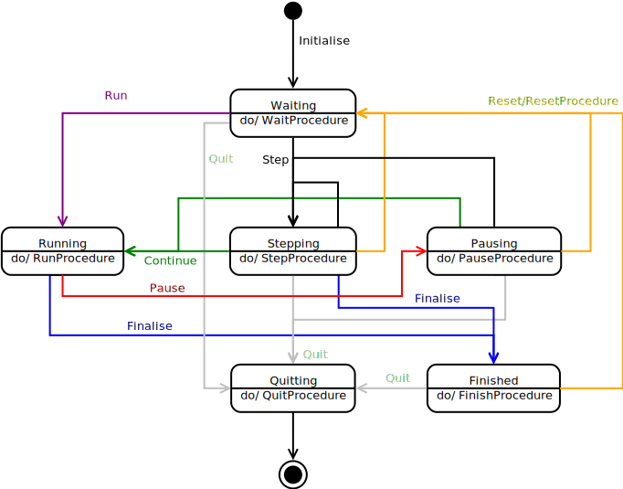

Class StateMachineEngine<O extends GridNode>
- Type Parameters:
O- TheObserverclass watching this state machine
- All Implemented Interfaces:
Observable<O>,Observer,GridNode,StateMachine,fr.ens.biologie.generic.Resettable
Implementation of a universal finite-state machine.
It is based on the ADA rendezvous pattern and on the Observer pattern. Instances of this class are meant to respond to messages they receive at rendezvous by changing state, depending on the events carried by messages.
Here is an example of setting up a state machine for a simulator, i.e. a software that can run, pause, step computations based on user actions (button clicks). This state diagram:
is implemented as follows:
// states of the simulator
waiting = new State("waiting");
stepping = new State("stepping");
pausing = new State("pausing");
running = new State("running");
quitting = new State("quitting");
finished = new State("finished");
// events triggering transitions between states
run = new Event(1,"run");
step = new Event(2,"step");
reset = new Event(3,"reset");
goOn = new Event(4,"continue");
pause = new Event(5,"pause");
finalise = new Event(6,"finalise",true);
quit = new Event(7,"quit");
initialise = new Event(8,"initialise",true);
// transitions between states
ips = new Transition(waiting,initialise);
waiting.addTransition(new Transition(running,run));
waiting.addTransition(new Transition(stepping,step));
waiting.addTransition(new Transition(quitting,quit));
running.addTransition(new Transition(pausing,pause));
running.addTransition(new Transition(finished,finalise));
stepping.addTransition(new Transition(running,goOn));
stepping.addTransition(new Transition(waiting,reset));
stepping.addTransition(new Transition(finished,finalise));
stepping.addTransition(new Transition(quitting,quit));
stepping.addTransition(new Transition(stepping,step));
pausing.addTransition(new Transition(running,goOn));
pausing.addTransition(new Transition(stepping,step));
pausing.addTransition(new Transition(waiting,reset));
pausing.addTransition(new Transition(quitting,quit));
finished.addTransition(new Transition(quitting,quit));
finished.addTransition(new Transition(waiting,reset));
// instanciation of state machine
StateMachine sm = new StateMachineEngine(ips, waiting,stepping,pausing,running,quitting,finished);
- Author:
- Shayne Flint - 2012
refactored by J. Gignoux - Aug. 2019.
-
Field Summary
Fields inherited from interface fr.cnrs.iees.rvgrid.statemachine.StateMachine
INITIAL_PSEUDO_STATE -
Constructor Summary
ConstructorsConstructorDescriptionStateMachineEngine(Transition initialPseudoState, State... states)Basic constructor with only one initial pseudo-state.StateMachineEngine(Transition initialPseudoState, Iterable<State> states)Basic constructor with only one initial pseudo-state.StateMachineEngine(Iterable<Transition> initialPseudoStates, Iterable<State> states)Generic constructor with many initial pseudo-states. -
Method Summary
Modifier and TypeMethodDescriptionvoidaddObserver(O listener)Registers anObserverto this instanceGet a state by its nameRead-only access to the events of this machine.Read-only access to the initial pseudo-states of this machine.Read-only access to the states of this machine.Read-only access to the transitions of this machine.booleanCheck if there are registered observers.booleanChecks if the state machine has started.Get the list of registered observers.voidremoveObserver(O listener)Removes anObserverfrom its listvoidsendMessage(int msgType, Object payload)Sends a message to all registered observers.voidsetCurrentState(State state)Sets the current state of the state machine to its argument.intThe status message is sent to all observers at every state change.toString()Methods inherited from class fr.cnrs.iees.rvgrid.rendezvous.AbstractGridNode
addRendezvous, callRendezvousMethods inherited from class java.lang.Object
equals, getClass, hashCode, notify, notifyAll, wait, wait, waitMethods inherited from interface fr.ens.biologie.generic.Resettable
postProcess, preProcess, reset
-
Constructor Details
-
StateMachineEngine
Basic constructor with only one initial pseudo-state. All constructors perform the following consistency checks:
- Events must have different message type indexes
- Transitions must refer to states present in the state machine
Exceptions will be thrown if these checks fail.
- Parameters:
initialPseudoState- the initial pseudo state (= a transition to one of the states)states- the list of states
-
StateMachineEngine
Basic constructor with only one initial pseudo-state. All constructors perform the following consistency checks:
- Events must have different message type indexes
- Transitions must refer to states present in the state machine
Exceptions will be thrown if these checks fail.
- Parameters:
initialPseudoState- the initial pseudo state (= a transition to one of the states)states- the list of states
-
StateMachineEngine
Generic constructor with many initial pseudo-states. All constructors perform the following consistency checks:
- Events must have different message type indexes
- Transitions must refer to states present in the state machine
Exceptions will be thrown if these checks fail.
- Parameters:
initialPseudoStates- a list of initial pseudo state (= transitions to one of the states)states- the list of states
-
-
Method Details
-
getStates
Description copied from interface:StateMachineRead-only access to the states of this machine.
NB: Implementations must use
Collections.unmodifiableCollection(...)to prevent accidental modification of the state list after machine initialisation.- Specified by:
getStatesin interfaceStateMachine- Returns:
- the immutable list of states
-
getInitialPseudoStates
Description copied from interface:StateMachineRead-only access to the initial pseudo-states of this machine. Notice that a pseudo-state is actually a transition where the initial state is unspecified.
NB: Implementations must use
Collections.unmodifiableCollection(...)to prevent accidental modification of the initial pseudo-states list after machine initialisation.- Specified by:
getInitialPseudoStatesin interfaceStateMachine- Returns:
- the immutable list of initial pseudo-states
-
setCurrentState
Description copied from interface:StateMachineSets the current state of the state machine to its argument.- Specified by:
setCurrentStatein interfaceStateMachine- Parameters:
state- the new current state
-
getCurrentState
- Specified by:
getCurrentStatein interfaceStateMachine- Returns:
- the current state of the machine
-
getTransitions
Description copied from interface:StateMachineRead-only access to the transitions of this machine.
NB: Implementations must use
Collections.unmodifiableCollection(...)to prevent accidental modification of the transition list after machine initialisation.- Specified by:
getTransitionsin interfaceStateMachine- Returns:
- the immutable list of transitions
-
getEvents
Description copied from interface:StateMachineRead-only access to the events of this machine.
NB: Implementations must use
Collections.unmodifiableCollection(...)to prevent accidental modification of the event list after machine initialisation.- Specified by:
getEventsin interfaceStateMachine- Returns:
- the immutable list of events
-
inInitialState
public boolean inInitialState()Description copied from interface:StateMachineChecks if the state machine has started.- Specified by:
inInitialStatein interfaceStateMachine- Returns:
trueif the state machine is in its initial pseudo-state.
-
addObserver
Description copied from interface:ObservableRegisters anObserverto this instance- Specified by:
addObserverin interfaceObservable<O extends GridNode>- Parameters:
listener- the Observer to add
-
sendMessage
Description copied from interface:ObservableSends a message to all registered observers. Messages are typed so that different actions can be triggered in the observer, based on type.- Specified by:
sendMessagein interfaceObservable<O extends GridNode>- Parameters:
msgType- the message typepayload- a payload to send to all observers
-
toString
-
currentStateString
- Returns:
- a text description of the current state
-
findState
Get a state by its name- Parameters:
name- the state name- Returns:
- the
Stateinstance
-
statusMessageCode
public int statusMessageCode()The status message is sent to all observers at every state change. This code must be prefixed to all status messages.- Returns:
- the status message code
-
removeObserver
Description copied from interface:ObservableRemoves anObserverfrom its list- Specified by:
removeObserverin interfaceObservable<O extends GridNode>- Parameters:
listener- the Observer instance to remove
-
hasObservers
public boolean hasObservers()Description copied from interface:ObservableCheck if there are registered observers.- Specified by:
hasObserversin interfaceObservable<O extends GridNode>- Returns:
trueif there is at least one registered observer
-
observers
Description copied from interface:ObservableGet the list of registered observers.- Specified by:
observersin interfaceObservable<O extends GridNode>- Returns:
- the immutable list of registered observers
-